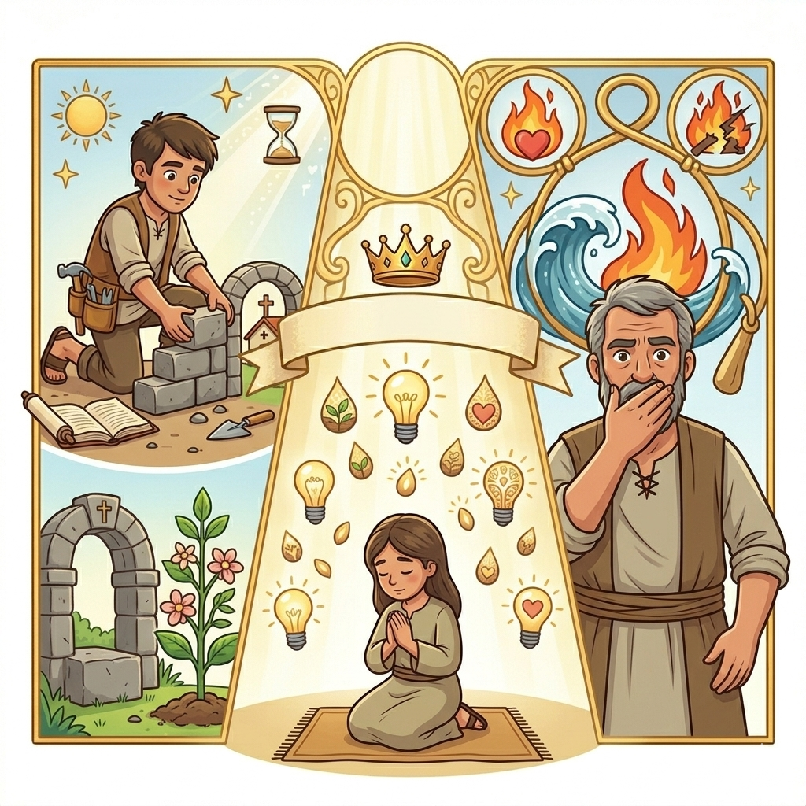
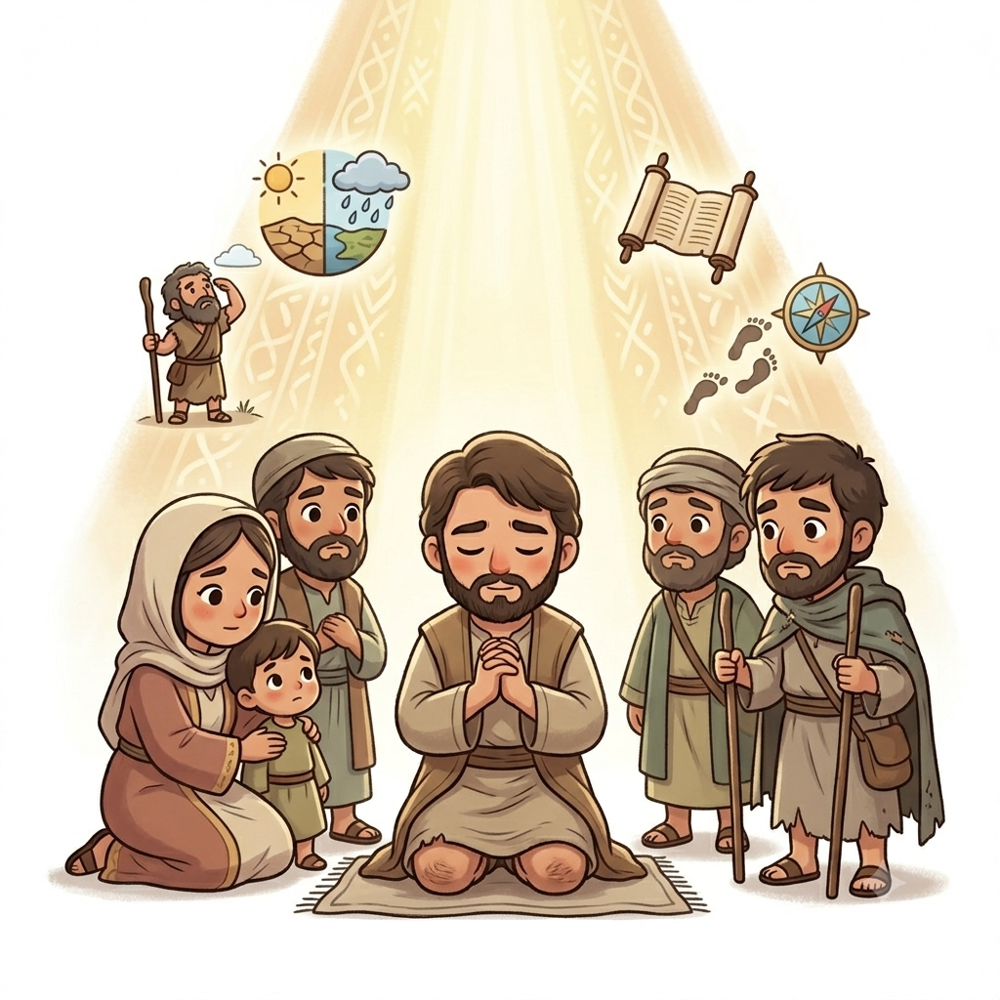
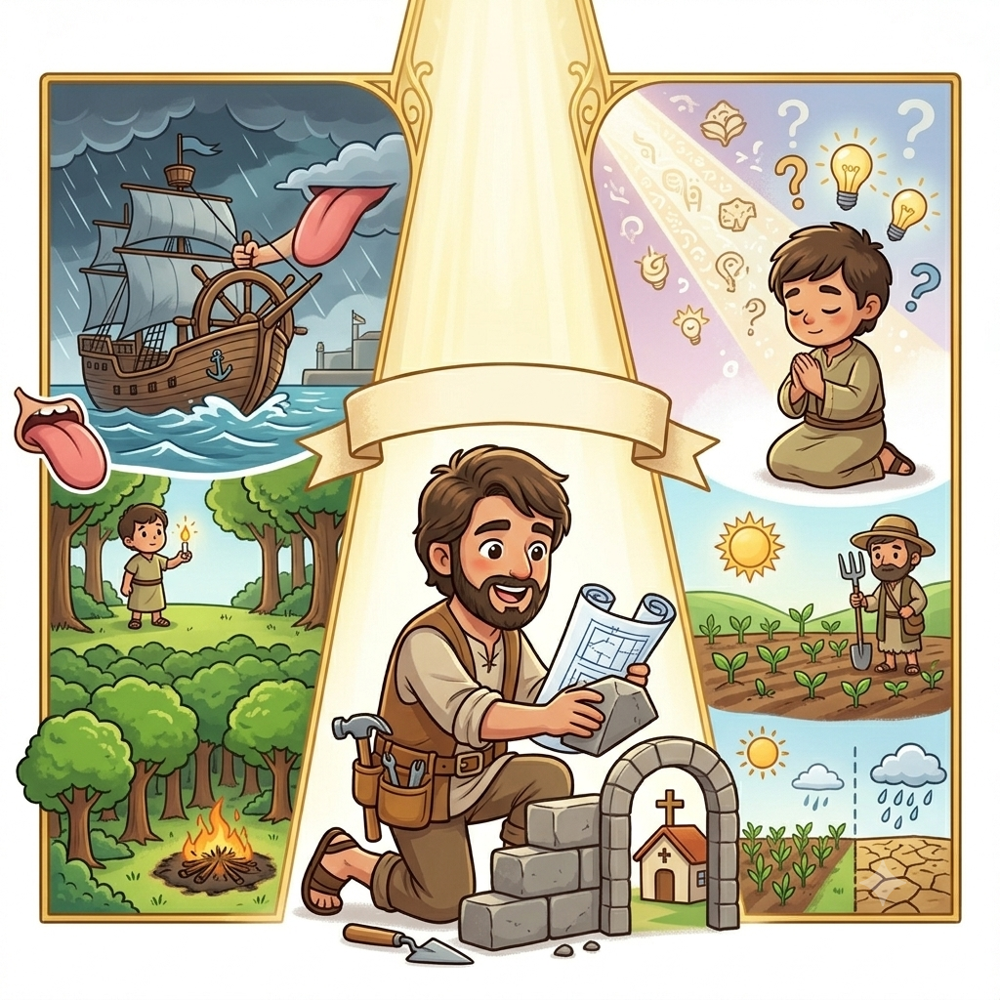
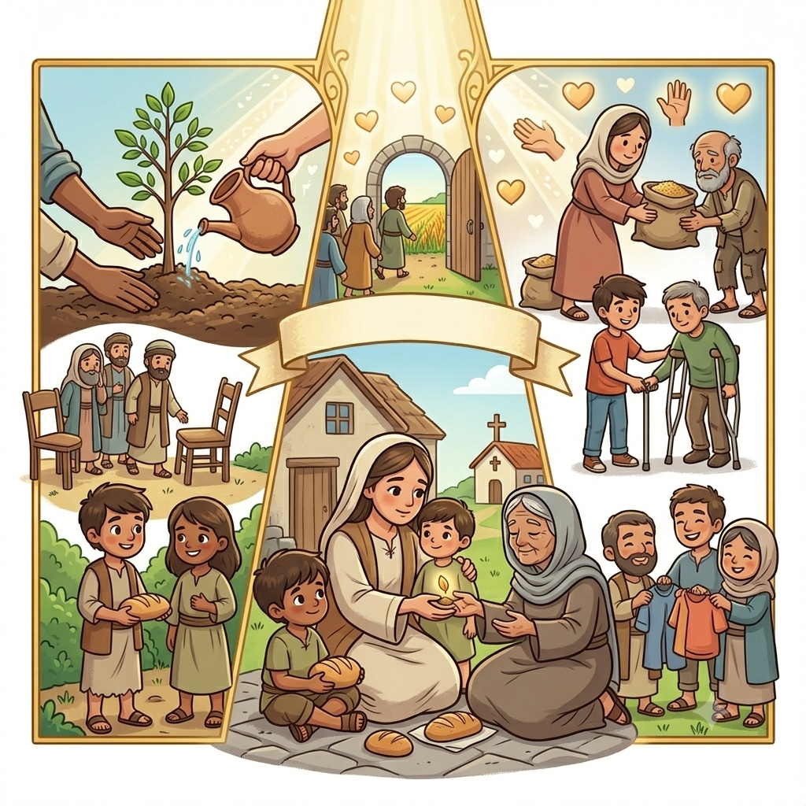
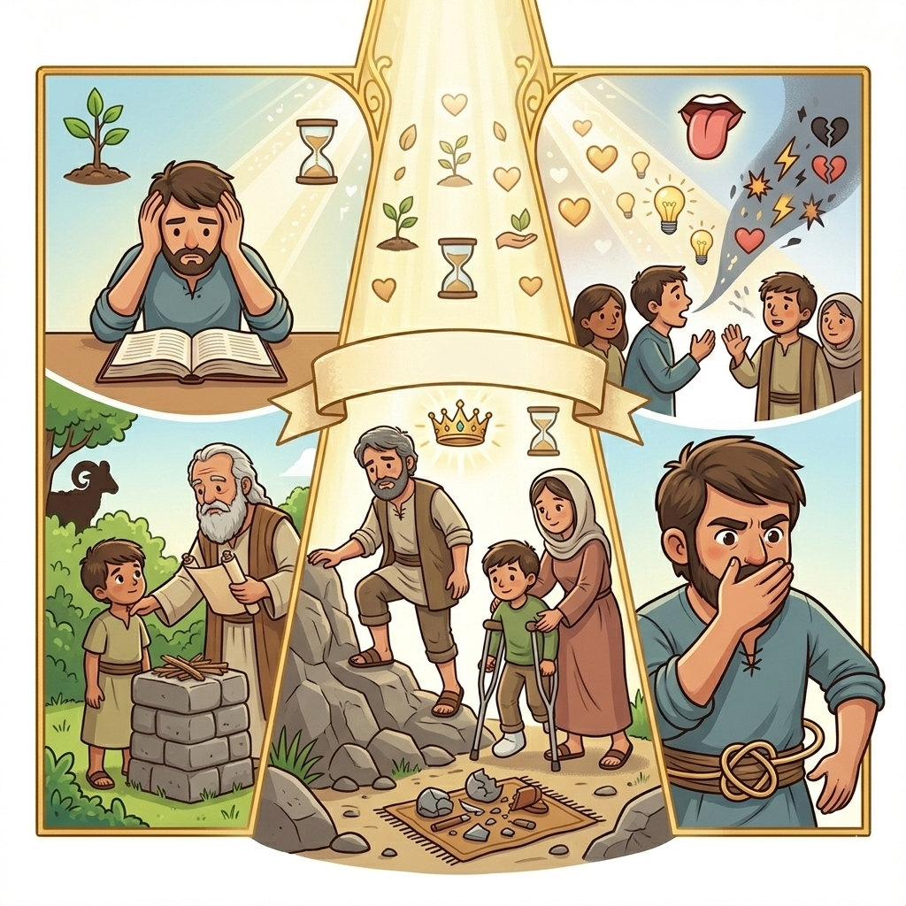
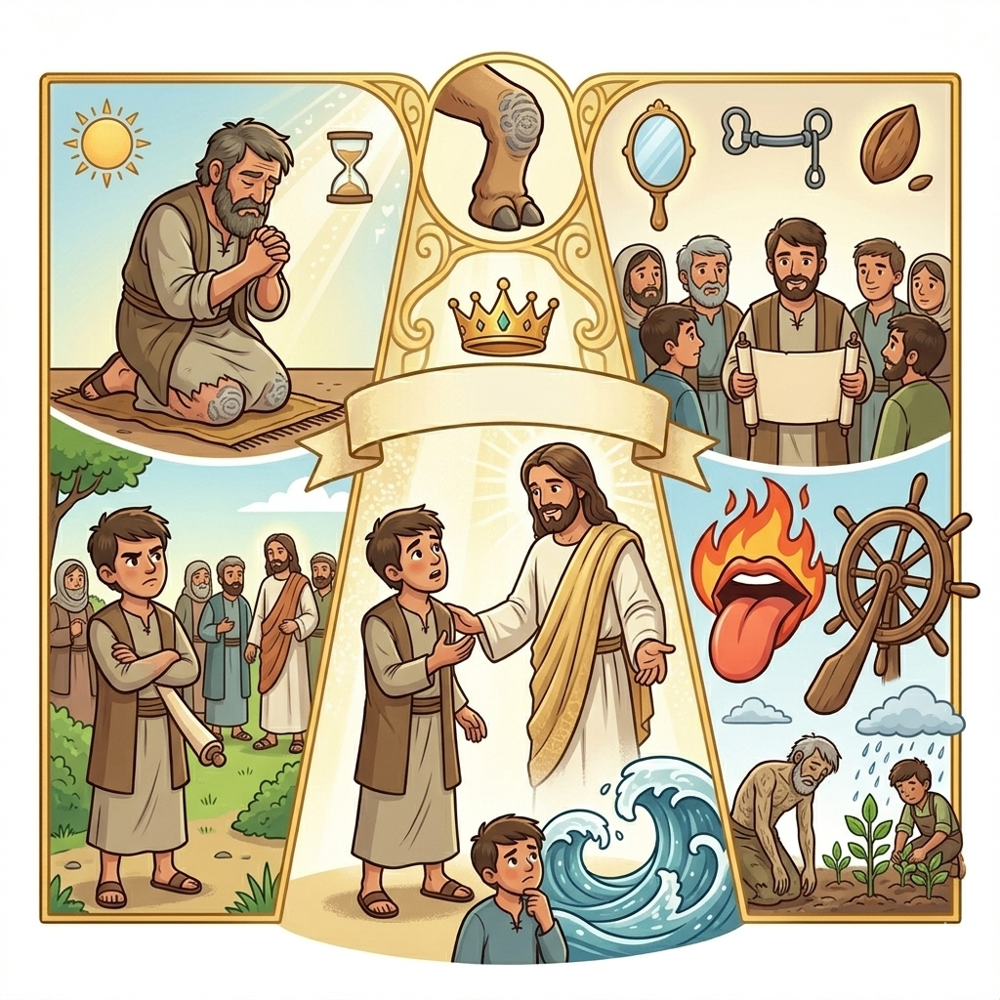

Fé que age — Um Resumo Visual para Crianças
"Não basta só acreditar,
É preciso também agir!
A fé sem obras vai parar,
Como planta sem florir."
📖 Tiago 2:17 - "A fé sem obras está morta"
"A língua é pequenina,
Mas pode muito estragar!
Como fogo que ilumina,
Ou que vem para queimar."
📖 Tiago 3:5-6 - "A língua é um fogo"
"Se sabedoria você quer ter,
Peça a Deus com humildade!
Ele vai te responder,
Com amor e bondade."
📖 Tiago 1:5 - "Se alguém tem falta de sabedoria, peça a Deus"

Irmão de Jesus e líder da igreja em Jerusalém. Ele escreveu esta carta cheia de conselhos práticos para os cristãos que estavam espalhados pelo mundo. Tiago era conhecido por sua sabedoria e por viver exatamente o que ensinava!
Pessoas que acreditavam em Jesus mas estavam longe de casa, enfrentando dificuldades e perseguições. Tiago escreveu para encorajá-los a viver sua fé com coragem e sabedoria, mesmo nos momentos difíceis.
Tiago ensina que não basta só dizer que temos fé — precisamos mostrar isso através das nossas atitudes! É como construir uma casa: não adianta só ter o projeto, é preciso pegar as ferramentas e trabalhar!
Ele usa exemplos incríveis para mostrar o poder das palavras: a língua é como um leme que dirige um navio enorme, ou como uma faísca que pode incendiar uma floresta inteira! Por isso, devemos tomar cuidado com o que falamos.
Tiago nos encoraja a pedir sabedoria a Deus e ter paciência nas dificuldades. Ele usa o exemplo do agricultor que espera pacientemente pela colheita — assim devemos ser nós, confiando em Deus!


Tiago nos mostra que fé verdadeira não é só acreditar com a mente — é viver de acordo com o que acreditamos! É como plantar uma semente: ela só cresce se for regada e cuidada.
"Sejam praticantes da palavra, e não apenas ouvintes!" ⚒️
Este livro nos desafia a sair da zona de conforto e colocar nossa fé em prática através de boas obras, palavras gentis e atitudes que honram a Deus!
Tiago escreveu esta carta para encorajar os cristãos a viverem com:
Esperar em Deus mesmo nas dificuldades
Reconhecer que precisamos de Deus e dos outros
Demonstrar amor através de ações práticas


Tiago é um mestre em usar exemplos simples e poderosos para ensinar grandes verdades! Ele compara:
👅 A língua com um fogo
Pequena, mas pode causar grande destruição!
🚢 A língua com um leme de navio
Pequena peça que dirige algo enorme!
🌊 A pessoa indecisa com ondas do mar
Levada de um lado para o outro!
🌱 O agricultor com o cristão paciente
Espera pela colheita com confiança!
✨ Esses exemplos tornam as lições de Tiago inesquecíveis! ✨
© 2025 - Trilho Kids
Desenvolvido com ❤️ para crianças